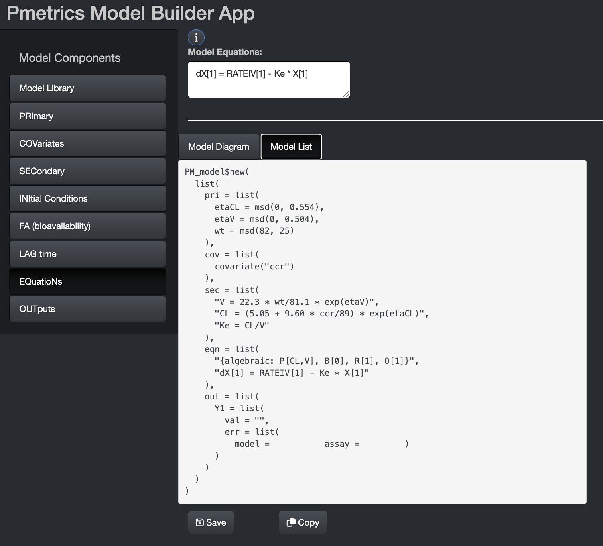

Foundations
This tutorial was designed to accompany a workshop, but may be completed independently. We assume that you have completed several tasks.
NOTE: This is best viewed in a browser. Click the “Open in Browser” button at the top left corner.
- Installed R, Rstudio, and Pmetrics.
- If you have not done so already, you can obtain everything you need
by following these instructions. Important: For this
workshop we are using a beta version of Pmetrics, v. 2.1.0. Prior
versions will not work. Replace the command in step 4 with
devtools::install_github("LAPKB/Pmetrics@dev").
You have also run PMbuild to compile the Pmetrics package.
Completed the pre-workshop exercises.
- You should have created a folder in your hard drive to store your Pmetrics projects. The suggested locations are “C:\Pmetrics” for Windows users or “~/Pmetrics” for Mac/Linux users.
- You should have loaded the Pmetrics library in R with
library(Pmetrics)and created a Workshop folder within your Pmetrics folder usingPMtree("Workshop"). - Your Workshop folder will contain subfolders as described in the help for PMtree.
Let’s get started!
Simulation from prior model fitting
Recall that Pmetrics always requires a data file and a model file. Once it has these, it fits the data to the model to estimate the probability distributions of the parameter values in the model equations. When you load these results with PM_load, you can use them for simulations among other things.
Look at PM_result objects
Pmetrics comes with the results of a run built in for you to use. Look at the description.?NPexNPex is a PM_result object. Click on the link to see a description of the fields and methods contained within NPex.
This is the easiest way to simulate, because you’ve already made your data and model objects. Note that PM_result objects also contain data and model fields, which in turn contain your original data and model objects.
Simulate from PM_result
Now that you know how to access the simulation method attached to a PM_result object that is generated by PM_load, let’s use it!
Like all “engines” in Pmetrics, the simulator needs a model, and some data. In this case the data serve as a template for the doses, covariates, outputs and timing of samples that you want to simulate. The simulator also needs to know the distributions you want to use for the parameter values in the model equations. If you want to use the same model, data, and parameter value distributions as you used in the original fitting, it’s very easy to access those in the PM_result object.
- The model is in the
$modelfield. - The data are in the
$datafield. - The parameter values are in the
$finalfield, and specifically the$final$popMeansfor the mean values, and$final$popCovfor the covariances.
Here’s how simple the code can be:
NPex$sim()
Arguments that can go within the parentheses are all supplied to the
SIMrun function, which is the function that the
$sim() method calls. SIMrun requires the
following arguments at minimum:
popparare parameter value distributionsmodelis the model objectdatais the data template
However, since they are all in the PM_result object as discussed, you don’t have to supply them!
Simulating from literature
Simulating from the literature is a more complex process because you need to create your own model object with equations that correspond to the ones in the published work. You also need to create a data object with relevant dosing and covariates, and lastly you need to specify prior distributions (means and covariances) for all the parameters in the model. It may not be immediately apparent from the paper where to get all those things, so the next several topics will deal with that.
Source: Primary parameters
Review the piperacillin PopPK model from Li et al., JAC 2005. The following R code included in the LearnPM package will open the pdf in your default viewer. In these exercises, we will learn and practice extracting parameters for pharmacometric models from published literature.
pkgPDF("Li_JAC_2005.pdf")Quiz
Know that \(\omega\) is the standard deviation of \(\eta\). To derive \(\omega\) from CV%, use the approximation \(\omega = CV\%\) when CV% is small (<50%), or the more exact formula \(\omega = \sqrt{log((\frac{CV\%}{100})^2 + 1)}\).
Again using Table 2, let’s extract the correct values for our simulations with piperacillin. We’ll use clearance as the example, but the same will apply to volume.
Quiz
Source: Covariates
It’s important to include covariate relationships with model parameters. The paper by Liu et al has relationships between covariates and two primary model parameters.
Quiz
Obviously there is a similar equation for Clearance.
Define simulation goals
Here we have no quizes, but we want to test three different piperacillin dosage regimens for how well they achieve desired concentration profiles in the population.
To do this, we are going to simulate steady-state PK profiles based on the piperacillin model in populations with:
- 3 piperacillin dosage regimens in 1000 subjects each
- 4g q8h (30 min infusion)
- 4g q8h (4h infusion)
- 12g continuous infusion
- Fixed, normal renal function (90 mL/min)
- Variable (random) weights with mean 82 kg, SD 25 kg
Create the data template
There are two ways to create the data template. The first is to use a spreadsheet program like Excel. The second is to create a template on the fly in R. Let’s look at both methods.
Be sure to look at the article on Pmetrics data objects for details on the column headers and meanings of the columns.
Option 1: Create in spreadsheet program
- Open the program, e.g. Excel.
- Name your columns: ID, TIME, DOSE, DUR, ADDL, II, OUT, CCR. We are not including WT as a covariate because we will simulate it.
- Make 3 subjects, each with the following.
- A DOSE at TIME 0 according to our goal doses
- A DUR according to the duration of the infusion
- The right number of ADDL doses so that the last dose is given at
TIME = 48 with dosing at an appropriate II interval. For the continuous
infusion, give one dose at time 0, DUR = 24, ADDL = 2, II = 24.
- Follow the dosing by one OUT with value -1 at time 72 (24 hours after the last dose)
- Fill in CCR = 90 in every row.
- Save the file as “pip.csv”. If you made a
/srcfolder in the pre-workshop exercises, put the file there. If your spreadsheet uses semicolons (;) as field separators, you’ll need to update Pmetrics withsetPMoptions(sep = ";").
Option 2: Create in R
Try your hand at building a data object using
PM_data$new() and $addEvent(). Inspect the
code below so that you understand it will create a record at time 0 for
subject ID 1, add a DOSE of 4000 mg infused over DUR 0.5 hours with 8
ADDL doses given at an II of every 8 hours, CCR = 90. The final line
will print the object. Press the Run Code button to see
the output.
dat <- PM_data$new()$
addEvent(id = 1, time = 0, dose = 4000, dur = 0.5, addl = 8, ii = 8, ccr = 90)
dat$print(viewer = FALSE)Next, build upon the prior exercise to edit the code below and add one OUT = -1 for ID 1 at TIME 72. Press the Run Code button to see the output when you are done.
#Add the new event to the end of this code
dat <- PM_data$new()$
addEvent(id = 1, time = 0, dose = 4000, dur = 0.5, addl = 8, ii = 8, ccr = 90)
#Print the result
dat$print(viewer = FALSE)dat <- PM_data$new()$
addEvent(id = 1, time = 0, dose = 4000, dur = 0.5, addl = 8, ii = 8, ccr = 90)$
addEvent(id = 1, time = 72, out = -1)Continue to build the object to add the second template subject, who gets a dose 4000 mg every 8 hours but by a 4 hour infusion instead of 30 minutes. Hint, copy your code from above and edit as needed. Add both the doses and the out in the same step. The only difference between ID 1 and 2 should be DUR.
#Add your code here
#Print the result
dat$print(viewer = FALSE)dat <- PM_data$new()$
addEvent(id = 1, time = 0, dose = 4000, dur = 0.5, addl = 8, ii = 8, ccr = 90)$
addEvent(id = 1, time = 72, out = -1)$
addEvent(id = 2, time = 0, dose = 4000, dur = 4, addl = 8, ii = 8, ccr = 90)$
addEvent(id = 2, time = 72, out = -1)Lastly, add the final subject template (ID = 3) who gets 12000 mg
daily by continuous infusion. Again, copy your code from above, paste it
below and edit. Use validate = TRUE in the last call to
$addEvent() to ensure that you have made a valid Pmetrics
data object.
#Add your code here
#Print the result
dat$print(viewer = FALSE)addEvent(..., dur = 24, addl = 2, ii = 24,...)
#Next hint is the solution.dat <- PM_data$new()$
addEvent(id = 1, time = 0, dose = 4000, dur = 0.5, addl = 8, ii = 8, ccr = 90)$
addEvent(id = 1, time = 72, out = -1)$
addEvent(id = 2, time = 0, dose = 4000, dur = 4, addl = 8, ii = 8, ccr = 90)$
addEvent(id = 2, time = 72, out = -1)$
addEvent(id = 3, time = 0, dose = 12000, dur = 24, addl = 2, ii = 24, ccr = 90)$
addEvent(id = 3, time = 72, out = -1, validate = TRUE)As final steps, please do the following.
- Open the Workshop.R file in the Rscript folder of
the Workshop project folder you made with
PMtreepreviously. This file is designed to get you started building a model from data. In this case, we are developing simulations from the literature. - Copy and paste your full data template creation code into your Rscript and save it.
- You can also copy and paste the file you made in Option 1 into the Sim folder. Call that file “simtpt.csv”, short for “simulation template”.
- In your Workshop.R script, save the object you created as a second template file.
- Change the working directory with setwd.
- You can first execute line 6 to change the working directory to the Runs folder in your project.
- Then use this command to switch to the Sim folder:
setwd("../Sim") - Use
dat$write("simtpt2.csv")to save thePM_dataobject you made into the Sim folder of your project.
- Compare “simtpt.csv” and “simtpt2.csv”. Are they the same? How are they different?
Build the model
Choosing the structural model
We need to decide on the equations for the model that relate input (dose) to output (concentration). That will either be a set of equations with an algebraic solution or a set of ordinary differential equations (ODEs). An algebraic solution means that the computer can calculate the concentration at any given time with simple algebra and not needing to use a differential equation solver.
Quiz
For this portion of the tutorial, we will use the model builder app in Pmetrics.
- Ensure that Pmetrics is loaded in R with
library(Pmetrics). This is the first line of code in your Workshop.R file in your project tree. - Use build_model to launch the app.
- Choose the library model with CL and V and one compartment. Hit the “Select” button.
- Let’s visit each section in turn.
Choosing primary parameters
First, we need to decide how many primary parameters are in the model.
Quiz
Primary parameter trickiness
In reality, although we indeed want to simulate 3 primary parameters, in this case they do not correspond to the \(\theta\) values exactly. We are trying to simulate the random parameters \(\eta_1\) and \(\eta_2\), which have means of 0 and standard deviations of \(\omega_1\) and \(\omega_2\). The third random parameter is weight in our simulations. The \(\theta\) values are actually fixed. We will need to account for them in the model equations, but not simulate them as random variables.Specifying parameter values
The Pmetrics simulator always simulates from normal distributions with a mean and standard deviation. It is possible to log-transform parameter values, and in fact we will do that in this model.
- On the Primary Parameters tab of the app, name your 3 variables:
- etaCL
- etaV
- wt
- Choose to specify as mean/SD.
- Use a mean of 0 for both etaCL and etaV.
- For standard deviation, go back to your second quiz and recall the value you found for \(\omega_{CL}\). Multiply that number by 2 to allow for a wider simulation range and enter it for the SD on etaCL.
- Do the same calculation for the SD on etaV.
- For weight, enter mean 82 kg, SD 25 kg.
Check your work

Specifying covariate relationships
Although the model by Li et al includes weight (WT) and creatinine clearance (CCR) as covariates, we are going to make weight a simulated value and fix CCR to 90 for all subjects in the model. You already made a data object with CCR as the covariate.
Now, learn how to make the accompanying model, continuing in the model builder app from the previous exercise.
- Move to the COVariates tab on the left side of the app.
- Click the “i” button at the top for information.
- Since you launched the app without passing a model or data object as an argument, there were no pre-loaded covariates.
- Follow the instructions to add
ccras a covariate. - Watch how the Model List changes in the bottom window. Make sure you have that tab selected.
- If you like you can make it piece-wise constant by typing
ccr!instead, and the Model List will update. Change it back toccr. - We don’t add WT as a covariate, because we already added it as a primary parameter to be simulated.
Check your work

Defining secondary equations
The SECondary tab is where we define the relationships between
primary parameters and between those parameters and covariates. You’ll
notice that the model already has a secondary equation
Ke = CL/V. This is because Pmetrics is looking for
specifically named parameters to understand if it can solve the model
without differential equations. In this case, it knows that this
one-compartment IV model should have a Ke, but because we chose the
model with clearance, it writes the equation to derive Ke from CL.
However, we have not yet defined either CL or V. We have etaCL and etaV. Look again at the paper by Li. We know that the \(\eta\) values are log-normally distributed. This means that the equation for a parameter is \(TV*e^\eta\) and \(TV\) is a combination of \(\theta\)s and covariates. For CL, \(TV_{CL}=\theta_1 + \theta_2*CCR/89\), which we see in Table 2. For V, \(TV_V=\theta_3*WT/81.8\).
The secondary equation for volume is then
V = 22.3 * WT/81.1 * exp(etaV). We saw something similar to
this in an earlier Quiz.
Quiz
I give up, show me the answer.
CL = (5.05 + 9.60 * ccr/89) * exp(etaCL) Don’t feel bad if you didn’t get it. Pharmacometrics is very detail oriented and your skills will improve with practice!Add these equations to the definition block and watch the Model List evolve. Note: Put the equations for V and CL before the equation for Ke, so that Pmetrics knows what CL and V are by the time it reaches Ke.
Check your work so far

Equations
The good news is that there isn’t anything for you to do on the
EQuatioN tab! Pmetrics has added a differential equation which you can
see in both the Model Equations box and in the eqn block of
the Model List below.
However, you can also see a “token” in the Model List that indicates this model will be solved algebraically. The differential equation is only for the purposes of structural model plotting in the diagram and for transparency, since algebraic solutions for models with more than one compartment are quite difficult to interpret. In contrast, once you are used to looking at pharmacokinetic/pharmacodynamic model differential equations, you can rapidly understand the structure. For more details on the token, you can read our article on Models.
Note that this model is very simple structurally, being only one compartment with no oral dosing. You can click the “i” button to understand more about how to write differential equations if you build your own model from scratch. All that work with \(\theta\)s and \(\eta\)s has paid off and the model equation reduces to a single parameter Ke!
Below is what your app should look like at this point. Now is a good time to check and make sure you’re on track!

Outputs
Lastly we come to the outputs, where we define in the model how to calculate our observations, which are typically drug concentrations or effects.
You can click on the “i” button for more information on how to write these output equations, but Pmetrics has already completed one for you based on the model you chose.
There is also nothing for you to do here because Pmetrics knows how to define the output based on the model you selected from the library. The fields related to assay and model error are more relevant when you are trying to fit models to data, rather than simulating. They describe how observations are weighted in the fitting process (assay noise) as well as additional noise (model error) associated with model misspecification and in the data (e.g. small errors in recorded sample times). Again, for more details refer to Models.
These are not used for simulation although as we’ll see, there are options to add noise to simulated inputs and outputs.
Saving and copying the model
Saving
At last you are ready to use the model! First, click the “Save” button. If your model is correctly constructed you will see the gratifying green pop-up below.

A file named “model.txt” is saved in your current working directory. You can double check this in R with getwd.
In your Mac Finder, Windows Explorer, or Linux File Manager, copy “model.txt” from its folder into the /src folder of your Workshop project.
Copying
Click the “Copy” button at the bottom of the model building app. Add
the following code to your Workshop.R script in Rstudio:
mod1 <-.
Then paste next to the assignment operator (<-).
Including the data template we made earlier, your script should look
like this. Be sure to save your script.
#make the data
dat <- PM_data$new()$
addEvent(id = 1, time = 0, dose = 4000, dur = 0.5, addl = 8, ii = 8, ccr = 90)$
addEvent(id = 1, time = 72, out = -1)$
addEvent(id = 2, time = 0, dose = 4000, dur = 4, addl = 8, ii = 8, ccr = 90)$
addEvent(id = 2, time = 72, out = -1)$
addEvent(id = 3, time = 0, dose = 12000, dur = 24, addl = 2, ii = 24, ccr = 90)$
addEvent(id = 3, time = 72, out = -1, validate = TRUE)
#define the model
mod1 <- PM_model$new(
list(
pri = list(
etaCL = msd(0, 0.554),
etaV = msd(0, 0.504),
wt = msd(82, 25)
),
cov = list(
covariate("ccr")
),
sec = list(
"V = 22.3 * wt/81.1 * exp(etaV)",
"CL = (5.05 + 9.60 * ccr/89) * exp(etaCL)",
"Ke = CL/V"
),
eqn = list(
"{algebraic: P[CL,V], B[0], R[1], O[1]}",
"dX[1] = RATEIV[1] - Ke * X[1]"
),
out = list(
Y1 = list(
val = "X[1]/V",
err = list(
model = additive(0.1),
assay = errorPoly(c(0.1, 0.1, 0, 0))
)
)
)
)
)Building the prior for simulation
We have the model; we have the data template. Let’s turn our attention to the command to execute the simulator.
The final mandatory item to run the simulator is a definition of the
parameter value distributions from which to draw samples. This is called
poppar, which is a list of three elements.
- wt The weights of distributions in a mixture model.
Typically, especially if simulating from the literature, there will only
be one value, which will be 1. If there were two distributions, i.e. a
bimodal parameter, then this element would have two numbers with the
relative weights of each mode, summing to 1,
e.g.
c(0.4, 0.6). - mean A vector of mean values for each random
parameter in the model. If
length(wt) > 1then this will be a matrix, with each row containing the mean parameter values for each mode. - cov The covariance matrix. Diagonal elements are the variances for the parameters, and off-diagonal are the co-variances. If there is more than one mode, then this is just the overall covariance, i.e. there is still only one matrix. If simulating from the literature, the co-variances are usually zero as they are not supplied. In that case, a convenvient way to make a diagonal matrix in R, with off-diagonal values = 0 is as follows.
diag(c(0.25, 625))## [,1] [,2]
## [1,] 0.25 0
## [2,] 0.00 625Let’s think about how to build poppar for our
simulation, based on the values in Li et al. Note: For
the random parameter variances, it’s not a bad idea to increase them to
allow for the possibility of parameter values beyond the original
population. In the questions below, be sure to double the standard
deviation of the random parameters before you calculate the variances by
squaring them.
popparYou now should have enough information to build poppar.
Replace the missing values with the correct ones. The “Run Code” button
won’t do anything, but you can check your answer by clicking the
“Solution” button.
poppar <- list(wt = NA, mean = c(NA, NA, NA), cov = diag(c(NA, NA, NA)))poppar <- list(wt = 1, mean = c(0, 0, 82), cov = diag(c((2*0.277)^2, (2*0.252)^2, (2*25)^2)))Copy the code into your Rscript.
Simulator command
At last we are ready to simulate. As described in Simulation vignette, there are two ways to run the simulator.
- If starting from the results of a population analysis, e.g. with NPAG or IT2B
run1 <- PM_load(1)
sim1 <- run1$sim(...)- Otherwise, use this construct.
sim1 <- PM_sim$new(poppar, model, data,...)The advantage of the first approach is that poppar can
be obtained from the PM_final object inside
run1, and the model and data are also fields inside
run1. You can replace the data to use a different
template.
However, if you don’t have a prior run, such as the case in this
workshop where we are simulating from the literature, you need to go
with approach two. That’s why we’ve been learning to make the data,
model and poppar.
The Simulation vignette and the help for the underlying simulator function SIMrun detail all the arguments you can use to change the behavior of the simulator. Here, we’ll focus on two:
- limits
- predInt
Limits allows you to truncate the simulation to keep it within the
boundaries established. Using a value of NA will apply the
limits in the model. You can remind yourself of those limits by looking
at min and max for each of the primary parameters with this code.
mod1Using predInt is a powerful shorthand for adding
simulations/predicitons at defined intervals without having to specify
them directly in your data template. This is why we only needed to add
one observation event at TIME = 72. The easiest way to use it here is
predInt = 1, which will generate simulated output every
hour from TIME = 0 until the last event in each simulation template, in
this case TIME = 72. This way, when you plot the simulated data, you can
see the whole profile and easily determine if you are at steady state,
for example.
You now have all the arguments for your call to
PM_sim$run().
- mod1
- dat
- poppar
- limits
- predInt
Try your best to write the code in your Rscript, Workshop.R. Assign
the results to sim1.
Check your work.
sim1 <- PM_sim$new(model = mod1, data = dat, poppar = poppar, limits = NA, predInt = 1)
Execute the code in your R script to run the simulation.
Plotting the simulated profiles
Let’s look at the results of the simulation. They should be stored in
an object called sim1. To understand the struture of
sim1, simply print it to the console by typing its name and
pressing
You’ll see that it is a PM_simlist, which contains a data field
and several methods. The data field contains a list of all
the PM_sim objects, one for each of the three template
dosing regimens in your data template file.
To plot from a PM_simlist object, call the method and use the
at argument to choose which of the list of
PM_sim objects you want to plot.
Copy this code into your R script.
sim1$plot(at = 1)Your plot should look something like this.
Try plotting the other two simulated regimens on your own.
The help for plot.PM_sim documents all the options for plotting.
Pmetrics uses the plotly package for default plotting.
Plotly is a package originally developed in Python but ported to R. Help
is generally available by searching the internet for “R plotly …” as
well as help files for any plotly function. Try ?plot_ly
and then click Index at the bottom of the page. You can
also use the schema command to invoke an expandable list of all
plotly plots and arguments. Lastly, view the Pmetrics article on plotly
A little more advanced plotting
There is no pre-defined Pmetrics plot function to examine the simulated parameter values, but of course in R you can do this. Remember that sim1 is a list of PM_sim objects, so you need to access the individual elements.
First, look at the first row of simulated parameter values for each regimen. Copy and execute the following code in your R script.
purrr::map_df(sim1$data, \(x) x$parValues[1,])What does this code do? It uses the map_df function in the purrr package from
tidyverse to cycle through each of the list elements in our
sim1 object. The purrr package is all about
working with lists in R. The \(x) is purrr’s
shorthand way of defining a function of x, where
x is the current member of the first argument to
map_df, in this case, sim1$data, i.e., the
output from our first simulated regimen. So we are looking at the first
row of each parValues data field for each simulated
output.
What do you notice? They are all the same! That’s the expected
behavior. We reuse the same seed to start the random parameter selection
for each regimen. That ensures we are comparing the same “subjects”
across regimens and that differnces are entirely due to the regimen, and
not due to differing parameter values. To override this behavior, you
can use the seed argument with as many seeds as you have
subjects in your template.
Now that we know the parameter values are the same for each regimen, let’s plot them, using the first set. We’ll compare 3 methods to plot them:
- Base R
- ggplot2
- plotly
Copy and execute this code in your R script.*
parValues <- sim1$data[[1]]$parValues
#Base R
plot(hist(parValues$etaCL, breaks = 50)) #we'll use etaCL as the example
#ggplot2
ggplot2::ggplot(parValues, aes(x = etaCL)) + geom_histogram(bins = 50)
#plotly - three ways
parValues %>% plotly::plot_ly(x = ~etaCL) %>% add_histogram(nbinsx = 50)
parValues %>% plotly::plot_ly(x = ~etaCL, type = "histogram", nbinsx = 50)
parValues |> plotly::plot_ly(x = ~etaCL, type = "histogram", nbinsx = 50)Notice the use of the pipe %>% or |>
for plotly. This is an amazing innovation in Tidyverse (the magrittr
package), which developed the %>% operator as a method
of chaining the output of one function to the input of the next. Tidyverse is a
powerful set of libraries for R that permit methodical, advanced data
manipulation. You can load it with library(tidyverse). Base
R has now adopted the pipe, with one fewer characters to type. Any
function in R which takes the data as the first argument, usually named
x, will work with a pipe. See ?"%>%" and
?"|>" for more details on these useful operators.
Plot the other simulated parameters on your own.
Summaries of simulations
PM_sim objects contain a method to summarize the
results, and there is a corresponding method for PM_simlist objects using the at =
argument that you have already seen with the PM_sim$plot()
method.
Copy the following code into your R script.
sim1$summary(at = 1, field = "obs")
sim1$summary(at = 2, field = "obs")
sim1$summary(at = 3, field = "obs")This summarizes the simulated observations across the whole population for the first dosage regimen in the template.
Try this code.
sim1$summary(at = 1, field = "obs", by = "id")Now we group the simulation by “id”, then summarize to obtain the mean, sd, median, min, and max over each subject’s individual mean, sd, min, and max. If you want to access each simulated subject’s individual summary statistics, try this.
sim1$summary(at = 1, field = "obs", by = "id", individual = TRUE)To obtain the areas under the curve (AUC), you can use the
$auc method attached to PM_sim objects.
sim1$auc(at = 1) #auc for all times 0 to 72
sim1$auc(at = 1, start = 48, end = 72) #auc just for the last 24 hours
sim1$auc(at = 1) %>% summary() #pipe to summary()Using the simulations for PTA
Probability of target attainment (PTA) is a powerful application of simulated results. The idea is to calculate the proportion of simulated profiles corresponding to a particular dosage regimen which meet given criteria for “success”.
For example, it could be a certain AUC or time above a threshold.
Pmetrics allows you to create a PTA in two ways.
- Use the
$pta()method attached to PM_sim and PM_simlist objects. - Use
PM_pta$new().
The only difference between these two is that with the first, you do not have to supply the name of your simulation object because you are operating upon it already.
Copy the code below into your R script to create a PTA. Refer to makePTA for details on the arguments to the method.
#first define labels for simulated regimens
simlabels <- c("4 gm over 0.5h, q8h", "4 gm over 4h, q8h", "12 gm/day continuous")
#using a previously created simulation built into Pmetrics
pta1 <- sim1$pta(simlabels = simlabels,
targets = c(0.25, 0.5, 1, 2, 4, 8, 16, 32, 64),
target.type = "time", free.fraction = 0.81,
success = 0.4, start = 48, end = 72)
#using a sampled distribution of MICs from EUCAST
#for Pseudomonas aeruginosa and piperacillin/tazobactam
#https://mic.eucast.org/search/
pip_pseudo <- data.frame(
mic = c(0.25, 0.5, 1, 2, 4, 8, 16, 32, 64),
n = c(28, 441, 827, 2884, 10269, 5473, 3351, 1728, 1323)
)
pta2 <- sim1$pta(simlabels = simlabels,
targets = makePTAtarget(pip_pseudo),
target.type = "time", free.fraction = 0.81,
success = 0.4, start = 48, end = 72)Some things to point out…
We’ll say again that you must supply simulation data, which has been
previously generated. By using the PM_sim$pta() method on
sim1, the simulation data are embedded in the object. If
you use PM_pta$new(), you have to supply the name of a PM_simlist object yourself.
Details of key arguments follow.
- simlabels Optional character vector of labels for
each simulation (i.e. subject in the data template). Default is
c("Regimen 1", "Regimen 2",...). - targets A vector of pharmacodynamic targets, such as Minimum Inhibitory Concentrations (MICs), e.g. ‘c(0.25, 0.5,1,2,4,8,16,32)’. In the second PTA, instead of a uniform distribution for MIC, we used a sampled distribution using makePTAtarget from real data (EUCAST).
- target.type Here we chose “time” to indicate that
our PDI is proportion of the intervalspecified by
startandendthat concentrations exceed the target. This argument can also be a numeric or character vector, length 1. If numeric, must correspond to an observation time common to all the PM_sim objects in the simulation data, rounded to the nearest hour. In this case, the target statistic will be the ratio of observation at timetarget.typetotarget. This enables testing of a specific timed concentration (e.g. one hour after a dose or C1) which may be called a peak, but is not actually the maximum drug concentration. Be sure that the time in the simulated data is used, e.g.target = 121after a dose given at time 120. In addition to “time”, character values may be one of “auc”, “peak”, or “min”, for, respectively, ratio of area under the curve within thestart:endtime range to target, ratio of peak concentration within the time range to target, or ratio of minimum concentration within the time range to target. - success A single value specifying the success
statistic, e.g. 0.4 for proportion time (end-start) above target. If we
were using
target.type = "peak", perhaps we could have chosensuccess = 100to indicate a goal peak:target of 100.
The created objects pta1 and pta2 are PM_pta objects, which you can look at by typing
pta1 or pta2 into the R console.
PM_pta() objects have two data fields:
- results A data frame with the following columns: simnum, id, target, pdi.
- simnum is the number of the simulation
- id is the simulated profile number within each simulation
- target is the specified target
- pdi is the target pharmacodynamic index, e.g. time > target, auc:target, etc.
- outcome A data frame summarizing the results with
the following columns: simnum, target,
prop.success, pdi.mean, and pdi.sd. If
‘targets’ was specified via
makePTAtarget()to be a sampled distribution, then the target column will be missing from the outcome table. - simnum and target are as for ‘results’.
- The prop.success column has the proportion with a pdi > ‘success’, as specified in the function call.
- The pdi.mean and pdi.sd columns have the mean and standard deviation of the target pharmacodynamic index (e.g. proportion end-start above target, ratio of Cmax to target) for each simulation and target.
They also have several methods:
- clone() to make a copy.
- save() and load() to save/load as an .rds file.
- plot() to call plot.PM_pta.
- summary() to call summary.PMpta
Plotting PTA
The most basic plot is achieved with a simple call to the method. Copy the below code to your R script.
pta1$plot()
pta2$plot()Notice the difference between the plots, according to whether
target was discrete or from a distribution. The latter plot
is also known as a “Cumulative Fractional Response” or CFR, which is the
proportion of a population achieving a response for a give dosage with a
distribution of target values in that population.
There are many ways to modify the plot, consistent with other
Pmetrics plots which use the plotly package and all detailed in
the help for plot.PM_data(). For example,
p <- pta1$plot(line = list(width = 3),
xlab = list(text = "MIC mg/L", font = list(size = 20)),
ylab = "Proportion with %T>MIC ≥ 60%",
xaxis = list(tickfont = list(size = 18)),
yaxis = list(tickfont = list(size = 18)),
legend = list(font = list(size = 18)),
marker = list(size = 16))Here’s more advanced plotly. Here we take the previous plot
p and add bars to it to represent the frequency
distribution of piperacillin MICs for E. Coli from EUCAST. We use our
pip_pseudo data frame, the MICs for the x-axis, and the
normalized counts for frequencies. We re-define the y-axis labels using
some CSS/HTML to color individual portions. This is quite advanced
plotly!
p %>% plotly::add_bars(x = ~mic,
y = ~round(n/sum(n),2),
marker = list(opacity = 0.6, color = "Dodgerblue"),
name = "MIC",
data = pip_pseudo,
width = ~mic*0.2,
showlegend = FALSE,
inherit = FALSE
) %>%
plotly::layout(
yaxis = list(title =
list(text = "<b>Proportion with %T>MIC ≥ 60%<br><span style='color:Dodgerblue; opacity:0.6'>MIC Frequency</span></b>")),
font = list(size = 10))Here’s a PDI plot. You are no longer plotting the proportion with success, but plotting in this case the proportion of the interval with concentrations > MIC.
pta1$plot(type = "pdi", ci = 0,
ylab = list(text = "Daily Proportion > MIC"),
xlab = "MIC (mg/L)")Summarizing PTA
Like most created Pmetrics objects, PM_pta() objects can
be summarized.
pta1$summary()
pta2$summary()The output is a list with two named objects:
pta A data frame with the following columns: simnum, target, prop.success, pdi.mean, and pdi.sd
simnum is the number of the simulation
target is the specified target
success has the proportion with a ratio > prop.success
pdi.mean and pdi.sd are the mean and standard deviation of the pharmacodyamic index (e.g. AUC/MIC) for each simulation and target.
pdi A data frame with the following columns: target, simnum, lowerCI, median, upperCI.
target and simnum are as above.
lowerCI, median, and upperCI are the lower limit, median, and upper limit of the confidence interval for the pdi whose width is specified by an argument
cito the summary method. The default forciis 0.95, but this can be changed.
pta1$summary(ci = 0.9)Factors influencing PTA
Interestingly, the regimen with infusions over 4 hours given every 8 hours had a slightly higher PTA than the continuous infusion, likely because the success definition was only %T > MIC of 40%. With a continous infusion, you are all above or all below the MIC, while an intermittent can allow for success if the required %T > MIC is not large and a significant portion of the time the concentrations are below the target.
Go back and create another simulation called sim2 and
make \(\omega\) for each of the random
parameters three times what Li et al found, instead of twice as we did
previously.
For the model try using the $clone() and
$update methods as below.
mod2 <- mod1$clone() #this makes a copy of mod1
#now update the primary parameters
mod2$update(list(
pri = list(
etaCL = msd(0, 3*0.277),
etaV = msd(0, 3*0.252),
wt = msd(82,3*25))
))Write the R code to make your new poppar2 and
sim2, copy it into your R script and run it. You can check
your work with the Solution button, but there are several ways
to write this R code, so if yours doesn’t match the solution we provided
exactly, your code might still work!
poppar2 <- list(wt = 1,
mean = c(0, 0, 82),
cov = diag(c((3*0.277)^2, (3*0.252)^2, (3*25)^2)))
sim2 <- PM_sim$run(model = mod2, data = dat,
poppar = poppar2,
limits = NA, predInt = 1)Now, redo the PTA with your new sim2 object. Call the
new PTA pta3.
pta3 <- sim2$pta(simlabels = simlabels,
targets = c(0.25, 0.5, 1, 2, 4, 8, 16, 32, 64),
target.type = "time", free.fraction = 0.81,
success = 0.4, start = 48, end = 72)Plot the original PTA with \(2*\omega\) and the new PTA with \(3*\omega\). Here’s the code to copy and execute.
pta3$plot()
pta1$plot()You can see that the effect of increasing \(\omega\) resulted in slightly lower PTA due to more extreme concentration-time profiles, and more were simulated which were below the target.
Now, let’s explore the influence of CCR.
- Try rebuilding your data to make CCR fixed at a low value of 40.
- Copy and paste the code for
datin your R script. - Name the new object
dat40. - Edit all the values of 90 to make them 40.
- Do the same again and make
dat130for a CCR of 130. - Rebuild the simulations with \(2*\omega\) (
poppar, notpoppar2) and each ofdat40anddat130. Call themsim40andsim130. - Redo the PTA and call them
pta40andpta130. - Plot them.
Note to yourself how renal insufficiency (CCR 40) and augmented renal clearance (CCR 130) affected PTA.
Try to now simulate CCR as a random variable with a range between 30 and 130.
You will need to remake your data, model, and poppar objects. For the
data, copy the code for dat and make a new object called
dat2. Remove the CCR entries.
For the model again use the $clone() and
$update methods as below.
mod3 <- mod1$clone() #this makes a copy of mod1
#now update it by adding ccr as a primary parameter
#and deleting it from the covariates
mod3$update(list(
pri = list(ccr = ab(30, 130)),
cov = NULL
))You should now have dat2 and mod3 which
have both WT and CCR as random variables.
What needs to be done to poppar? Think about that for a
minute, maybe try writing some code then check your answer.
Hint, you can look at mod3 and get the SD
for CCR based on the range you created above, and of course \(variance = SD^2\). Don’t forget to inflate
that SD by 2 before squaring it.
Click here for answer.
We need to expand the mean and cov to
include CCR, so mean should be a vector with 4 values and
cov should be a 4x4 matrix.
poppar3 <- list(wt = 1,
mean = c(0, 0, 82, 90),
cov = diag(c((2*0.277)^2,
(2*0.252)^2,
(2*25)^2,
(2*16.7)^2))
)Now we have the three mandatory elements to conduct a simulation * data template dat2 * model mod3 * poppar poppar3
Try creating the simulation using these elements. Call it
sim3. Then repeat the PTA (calling it pta4) as
you did for pta1 but using sim3.
Check the simulated CCR by summarizing the simulation “parValues”
field, and then plot pta4.
Click here for answer.
sim3 <- PM_sim$run(model = mod3, data = dat2,
poppar = poppar3,
limits = NA, predInt = 1)
pta4 <- sim3$pta(simlabels = simlabels,
targets = c(0.25, 0.5, 1, 2, 4, 8, 16, 32, 64),
target.type = "time", free.fraction = 0.81,
success = 0.4, start = 48, end = 72)
sim3$summary(at = 1, field = "parValues")
pta4$plot()Lastly, look at the influence of the success metric.
What happens if you change success to 1,
i.e. concentrations above MIC for 100% of the interval?
- Copy your code for making
pta1and call itpta100. - Edit it to change
successto 1. - Remake the PTA, plot and summarize it in your R script.
Click here for answer.
pta100 <- sim1$pta(simlabels = simlabels,
targets = c(0.25, 0.5, 1, 2, 4, 8, 16, 32, 64),
target.type = "time", free.fraction = 0.81,
success = 1, start = 48, end = 72)
pta100$plot()
pta100$summary()Alternative dosing regimens
By now you are an expert!
On your own, explore differing dosage regimens for piperacillin. Dosages as high as 36 gm in a day for obese adults have been reported.
pkgPDF("Veillette_2021.pdf")You can add higher doses to your dat template as
additional subjects in the template and/or experiment with differing
infusion durations.
Of course, the higher the dose, the higher a breakpoint, but toxicity becomes an issue. There isn’t much on piperacillin toxicity, but one article proposed a threshold of 157.2 mg/L for continuous infusion.
pkgPDF("Quinton_2016.pdf")You can contruct a toxicity PTA as well.
- Use
target.type = 72to focus on the simulated concentration at the end of the last dosing interval at time 72 hours. - Keep
success = 1 - Use
targets = c(100, 120, 160)to try differing toxcity thresholds
Now “success” will be the proportion of subjects who exceed the target at time 72, i.e. are at risk of toxicity.
Click here for sample code
ptaTox <- sim1$pta(simlabels = simlabels,
targets = c(100, 120, 160),
target.type = 72, free.fraction = 0.81,
success = 1, start = 48, end = 72)
ptaTox$plot()
ptaTox$summary()Compare the toxicity of 12 gm/day continous to one of your alternative high-dose regimens.